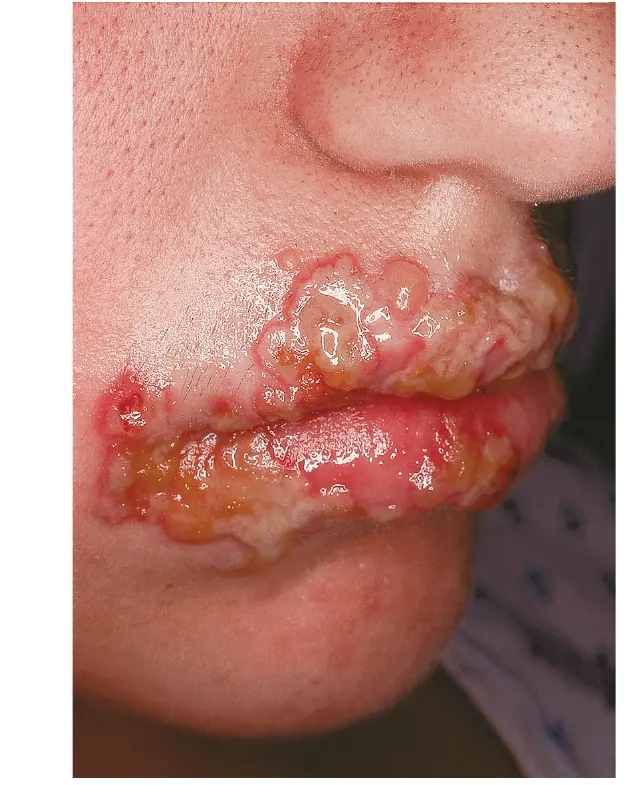
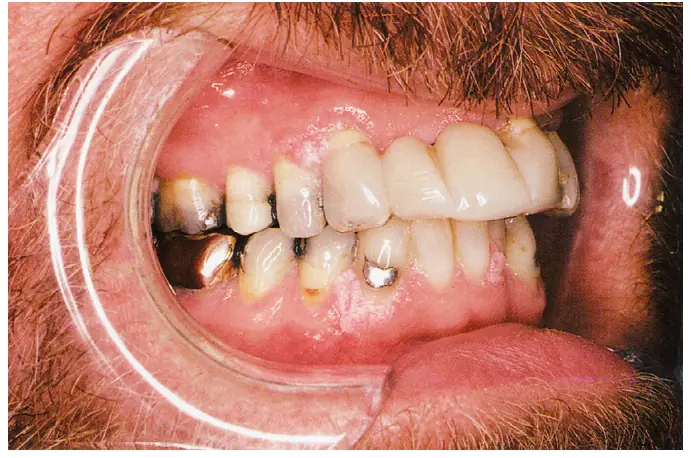

نسخه استخراجشده؛ ترجمه یا تأیید علمی انجام نشده است. وضعیت: captured
خانم ۳۲ سالهای برای تعویض ترمیمهای آمالگام آمده. روی لب بالایش چند وزیکول تازه دیده میشود و میگوید سالی چهار پنج بار تبخال میزند. کار را امروز انجام میدهی؟

ضایعهی هرپسی در مرحلهی پاپول، وزیکول و زخم عفونی است. درمان انتخابی را تا بهبود کامل ضایعه عقب بینداز؛ پس از دلمه بستن، بیمار دیگر عفونتزا شمرده نمیشود. کار روی ضایعهی فعال ممکن است ویروس را به جای تازهای در دهان بیمار، به دست تو، یا با ذرات معلق به چشم بیمار و تیم برساند.
هرپس انگشت (herpetic whitlow): عفونت دردناک و عودکنندهی انگشت یا بستر ناخن در کسی که بیدستکش به ضایعهی لب یا دهان دست زده است.
واکسن HPV: واکسن ۹ ظرفیتی برای ۹ تا ۲۶ سالگی توصیه میشود (بهطور روتین ۱۱ تا ۱۲ سالگی) و از ۲۰۲۰ پیشگیری از سرطان اوروفارنکس هم جزو کاربردهای آن است. تیم دندانپزشکی میتواند آن را توصیه کند.
